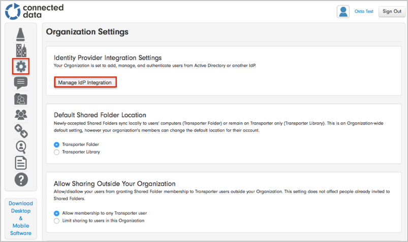
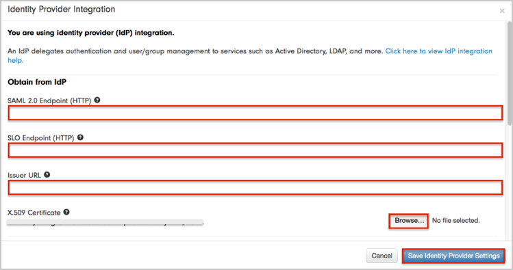
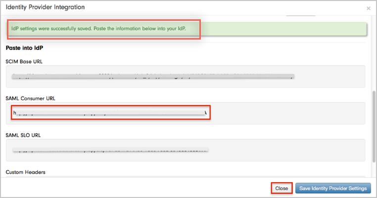
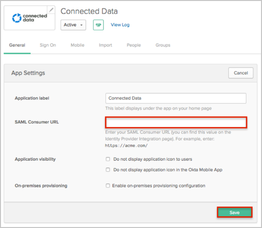
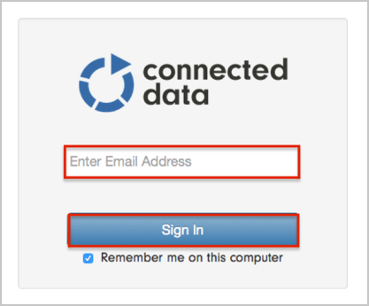

Log in to the Transporter Management website as your Organization Admin.
Navigate to Organization Settings.
Click on the Manage IdP Integration button:

The Identity Provider Integration window opens, enter the following (see screen shot at end of step for reference):
SAML 2.0 Endpoint (HTTP): Copy and paste the following:
Sign into the Okta Admin Dashboard to generate this variable.
SLO Endpoint (HTTP): Copy and paste the following:
Sign into the Okta Admin Dashboard to generate this variable.
Issuer URL: Copy and paste the following:
Sign into the Okta Admin Dashboard to generate this variable.
X.509 Certificate: Download the following, then click Browse to locate and upload it:
Sign into the Okta Admin Dashboard to generate this variable.
Click the Save Identity Provider Settings button.

Wait until you receive a IdP settings were successfully saved. Paste the information below into your IdP message.
Make a copy of the value from the SAML Consumer URL field, then click the Close button:

In Okta, select the General tab for the Connected Data app, then click Edit.
Enter the SAML Consumer URL value you saved earlier into the corresponding field.
Click Save:

Done!
Notes:
SP-initiated flows and IdP-initiated flows are supported.
Just In Time (JIT) provisioning is not supported.
For SP-initiated flows:
Open your Login URL.
Enter your email address.
Click the Sign In button:
